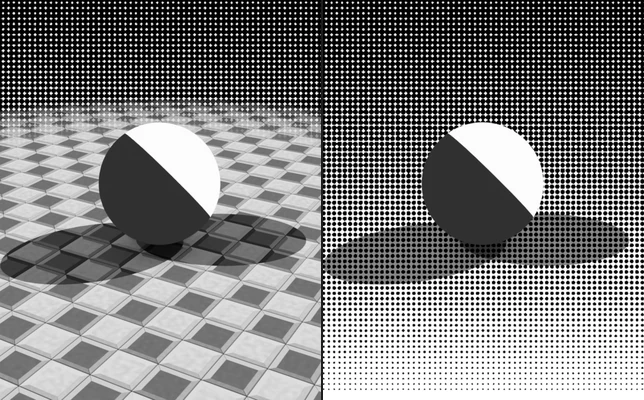
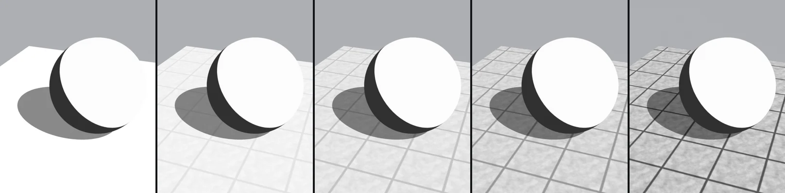
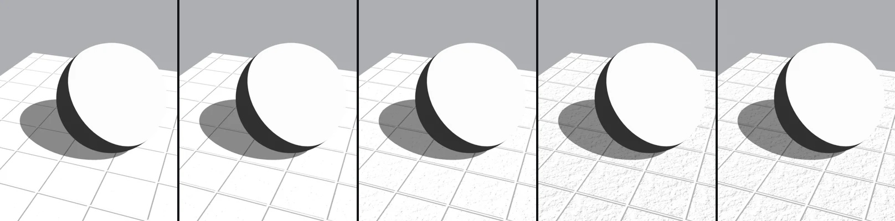
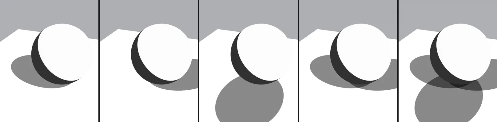
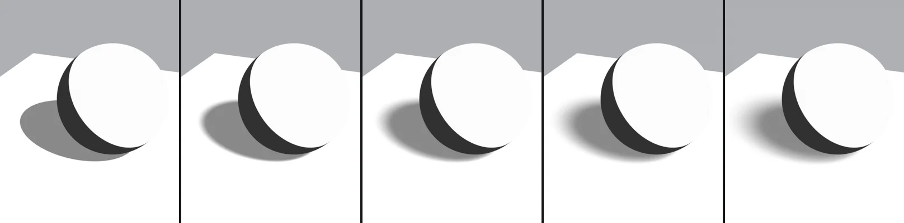
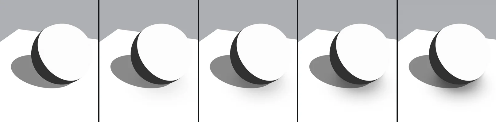
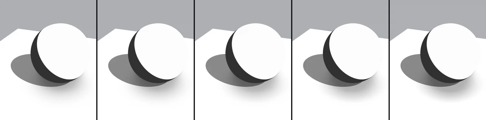
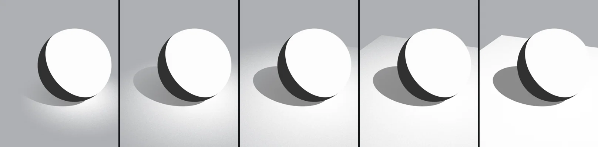

Manga Toon Ground（地面） NEW

MTG · Material › Manga Toon Ground
キャラクターの下に敷く地面専用のマテリアルです。キー・フィル・バックのライトの影を、ライトごとにオン・オフして平らな影の色（トーンも入れられる）で描きます。地面を透明にして影だけを背景に重ねたり、端を消して背景になじませたりもできます。

概要図 Layer stack
地面の色に、テクスチャ・凹凸・影・AO を掛け合わせて重ねます。
構成 Node tree
地面を照らすのは影用ライトだけ
地面には、キー・フィル・バックと同じ向き・色・強さの「地面の影用ライト」がライトグループごとに3つ付きます。ふつうのライトは地面を照らさない（ライトリンキングで除外）ので、影のぼかし（影用ライトの角度）を上げてもキャラクターの影は変わりません。
パネルと数値 Inputs
5つの画像は、左から右へ値を変えたものです。画像の下に値を書いています。黄色い欄がその項目の既定値です。テクスチャの濃さ 0・ノーマルマップなしの状態で、変えている項目以外は既定値のままです。
Manga Toon Ground の項目一覧
| パネル | 項目 | 英語名 | 既定値 | 内容 |
|---|---|---|---|---|
| 地面 | 影だけ | Shadow Only |
オフ | 地面を見えなくして、影だけを背景の上に残します |
| 地面 | 地面の色 | Ground Color |
白 | 地面の色（スクリーントーンのマテリアルも入れられます） |
| テクスチャ | 地面のテクスチャ | Ground Texture |
（自動） | 選んだ画像から自動で入ります |
| テクスチャ | テクスチャの濃さ | Texture Strength |
1 | テクスチャが地面に出る強さ |
| テクスチャ | テクスチャを白黒に | Grayscale Texture |
オフ | テクスチャを白黒で使います |
| テクスチャ | 地面の凹凸 | Ground Normal |
（自動） | テクスチャとノーマルマップから自動で入ります |
| テクスチャ | 凹凸の陰の色 | Bump Shade Color |
灰 0.45 | 凹凸の光に背を向けた側に掛け合わせる色（影の中でも出ます） |
| テクスチャ | 凹凸の陰の境目 | Bump Shade Threshold |
0.75 | 高いほど、ゆるい凹凸にも陰が付く |
| テクスチャ | 凹凸の陰・照りのやわらかさ | Bump Shade Softness |
0.3 | 0 = セル塗りのような 2 段、1 = なめらか |
| テクスチャ | 凹凸の照り | Bump Highlights |
オン | 凹凸の光に向いた側を明るくします（そのライトの影の中には出ません） |
| テクスチャ | 照りの色 | Bump Highlight Color |
白 | 凹凸の照りの色 |
| テクスチャ | 照りの強さ | Bump Highlight Strength |
0.6 | 照りの出る強さ |
| テクスチャ | 照りの境目 | Bump Highlight Threshold |
0.3 | 低いほど照りが増える |
| 影 | キーライトの影 | Key Light Shadows |
オン | キーライトの影を描きます |
| 影 | フィルライトの影 | Fill Light Shadows |
オフ | フィルライトの影を描きます |
| 影 | バックライトの影 | Back Light Shadows |
オフ | バックライトの影を描きます |
| 影 | 影の色 | Ground Shadow Color |
灰 0.25 | 影の色（スクリーントーンのマテリアルも入れられます） |
| 影 | 影の濃さ | Ground Shadow Opacity |
1 | 影の出る強さ（0 = 影なし） |
| 影 | 影のぼかし | Shadow Blur |
0 | 地面の影のぼけ具合。キャラクターの影は変わりません |
| 影 | 影のふちのやわらかさ | Shadow Softness |
0.1 | 影のふちのやわらかさ（0 = くっきり） |
| 接地の陰（AO） | 接地の陰（AO） | Ground AO |
オフ | 物の近くや接地しているところの地面を暗くします。そこでは影も濃くなります |
| 接地の陰（AO） | AO の色 | Ground AO Color |
灰 0.3 | 遮られたところに掛け合わせる色（トーンも入れられます） |
| 接地の陰（AO） | AO の濃さ | Ground AO Strength |
0.8 | AO で地面が暗くなる強さ |
| 接地の陰（AO） | AO の届く距離 | Ground AO Distance |
1 m | 物からどのくらいの距離まで暗くなるか |
| 接地の陰（AO） | AO のくっきりさ | Ground AO Contrast |
0 | 0 = なめらかなぼかし、1 = 漫画の接地影のようにくっきり |
| 接地の陰（AO） | AO のコントラスト | Ground AO Tone Contrast |
0 | ＋ = 濃い所と薄い所の差を強く、− = 平らに |
| 接地の陰（AO） | AO の明るさ | Ground AO Brightness |
0 | ＋ = 薄く、− = 濃く |
| 接地の陰（AO） | AO を影の中だけに | AO Only in Shadows |
オフ | AO を影用ライトの影の範囲だけに出します（クリッピングマスク） |
| 端を消す | 端を消す | Fade Edges |
オフ | 地面の中心から遠い所を消して、背景になじませます |
| 端を消す | 消え方（自動） | Fade Ramp |
1 | 消し方のカラーランプから自動で入ります |
| 端を消す | 消し方の形 | Fade Shape |
1 | 0 = 中心から円形、1 = 地面の辺に沿って（MTG Fade Position） |
| 端を消す | 円の半径 | Fade Radius |
30 m | 地面が消えていく円の半径（MTG Fade Position） |
| 端を消す | 辺から消す幅 | Edge Fade Width |
5 m | 地面の辺から、消えていく幅（MTG Fade Position） |
| ライト（自動） | キー／フィル／バックライトの向き・強さ | … Light Direction / Strength |
（自動） | 地面の影用ライトからドライバーで自動で入ります。強さ 0 = そのライトの影なし |
地面 Ground
Shadow Only既定 オフ比較 オフ → オン地面を見えなくして、影だけを背景の上に残します。オンにすると地面（テクスチャ）は消え、影だけが背景に掛け合わされます。比較画像は背景を「トーン模様」にしたもので、オンでは地面が消えて網点の背景の上に影だけが残ります。


テクスチャ Texture
Texture Strength既定 1比較 0 → 1テクスチャが地面に出る強さ。画像はサンプルのコンクリートタイル（ノーマルマップなし）の場合。


Bump Shade Threshold既定 0.75比較 0 → 1高いほど、ゆるい凹凸にも陰が付く。画像はノーマルマップあり・照りオフの場合。



影 Shadow
Key / Fill / Back Light Shadows既定 キーのみ比較 キー → 3灯キー・フィル・バックそれぞれの影のオン・オフ。重なった所ほど濃くなります。



Shadow Blur既定 0比較 0 → 1地面の影のぼけ具合。キャラクターの影は変わりません。影のぼかし 1 = 影用ライトの角度 20°。


接地の陰（AO） Ambient Occlusion
Ground AO Strength既定 0.8比較 0 → 1AO で地面が暗くなる強さ。画像は AO オン・届く距離 2.5 m の場合。



Ground AO Contrast既定 0比較 0 → 10 = なめらかなぼかし、1 = 漫画の接地影のようにくっきり。画像は AO オン・届く距離 2.5 m の場合。


端を消す Fade
Fade Radius既定 30 m比較 3 m → 30 m地面が消えていく円の半径（MTG Fade Position）。画像は端を消すオン・消し方の形 0（円形）の場合。


影のふちのやわらかさ（Shadow Softness）は、影用ライトの影がくっきりしているときはほとんど変わりません。影のぼかしと組み合わせると、ぼけた影の濃淡の出方が変わります。